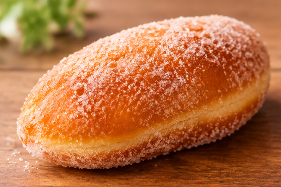
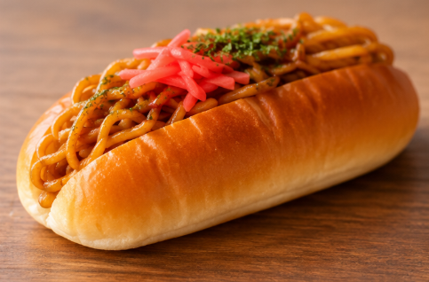

第1位

揚げパン¥280
外はサクッと、中はふんわりとした食感が魅力の揚げパン。油で揚げることで生まれる香ばしさと、口いっぱいに広がる甘さが特徴です。 きな粉や砂糖をたっぷりまぶした昔ながらの味わいは、どこか懐かしく、子どもから大人まで幅広い世代に愛されています。ひと口食べれば、やさしい甘さとふんわりした生地が絶妙にマッチ。おやつにもぴったりな、何度でも食べたくなる人気のパンです。
第2位

焼きそばパン¥260
ふんわりとしたコッペパンに、ソースの香ばしい焼きそばをたっぷり挟んだ、ボリューム満点の惣菜パンです。 もちもちとした麺に絡む濃厚なソースの旨味と、パンのほんのりとした甘みが相性抜群。紅しょうがや青のりを添えれば、さらに風味豊かな味わいを楽しめます。片手で手軽に食べられるのも嬉しいポイント。お昼ごはんや小腹が空いたときにもおすすめの、昔から親しまれている定番の一品です。
第3位

フランスパン¥320
パリッと香ばしいクラスト（外皮）と、しっとり弾力のある中身が特徴のフランスパン。小麦本来の豊かな風味と素朴なおいしさを存分に味わえます。 噛むほどに広がる小麦の甘みと香りは、シンプルだからこそ感じられる魅力です。そのまま食べるのはもちろん、バターやジャムを塗ったり、チーズやハムを挟んでサンドイッチにしたりと、楽しみ方もさまざま。毎日の食卓を少し贅沢にしてくれる、奥深い味わいのパンです。